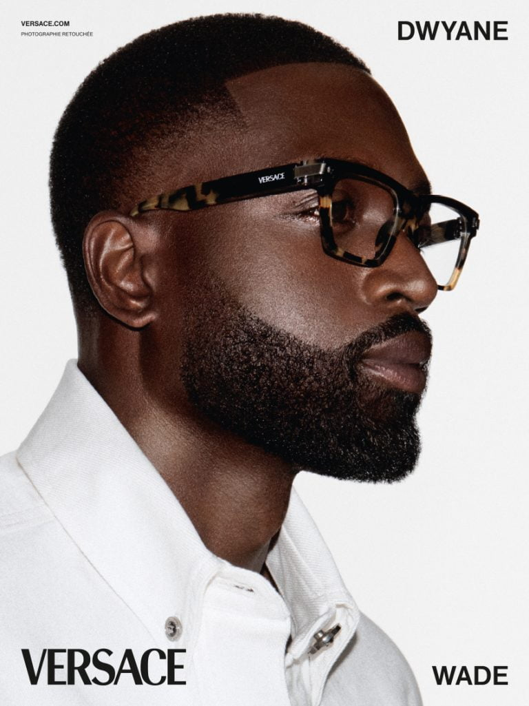

Arrivage1 · Une matinée en boutique, en POV
20–30 sHook : « POV : tu ouvres la boutique du 2ᵉ à 10h30 »
Plan 1 · 0–4 sLa rue qui s'éveille, la monture du jour à la main
Plan 2 · 4–15 sPréparer le comptoir, aligner les modèles du moment
Plan 3 · 15–30 sPremier client, premier essayage, premier café
Ce qu'on y voit : le rituel du matin filmé à hauteur d'opticien — lumières, présentoirs, rue Montmartre.
Pourquoi ça marche l'humain derrière le comptoir crée l'attachement au quartier — c'est ce qu'aucune chaîne ne peut copier.